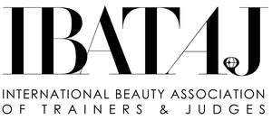

Trade Mark Journal No.2025/021 23 May 2025
UK00004200454 8 May 2025 (35,41)

- Class 35
- Business management and promotional services for beauty professionals, educators, trainers, and judges; organization and management of business events, exhibitions, networking forums, trade shows, and industry fairs for the beauty and aesthetics sector; promotion of international beauty championships, professional competitions, fashion and cosmetic exhibitions; public relations services; advertising and digital marketing for members of the association; promotional campaigns and branding support for beauty professionals and educational institutions; business consulting for beauty experts, salon owners, training centers, and event organizers; sponsorship search and coordination; management of sponsorship relations and partnerships; creation and distribution of advertising content; maintaining a professional registry and directory of certified members, trainers, and judges; community management and member engagement services; consultancy in brand development, personal branding, and positioning in the beauty market; support in launching educational programs, beauty projects, and public initiatives; advisory services related to business growth, strategy, and visibility in the international beauty industry; arranging, organizing, and conducting competitions and events in the field of nail technology, nail treatments, nail art, hairstyling, makeup, permanent makeup, brows, depilation, cosmetology, lash extensions, tattoo artistry, body art, massage, aesthetic medicine, barbering, spa treatments, and trichology; business organization consultancy for beauty industry professionals, including nail technicians, hair stylists, makeup artists, permanent makeup artists, brow specialists, skincare experts, lash technicians, tattoo artists, body art specialists, depilation specialists, cosmetic tattooists, massage therapists, spa professionals, aesthetic doctors, beauty educators, trichologists, holistic beauty experts, piercing specialists, and barbers; provision of commercial and business contact information for beauty professionals and educators; career planning consultancy and career networking services in the beauty and aesthetics industry; online community management services for beauty industry professionals and educators; advertising services for beauty competitions, exhibitions, cosmetic products, and events in the field of beauty, fashion, and aesthetics; business management, consultancy, and advisory services for beauty salons, beauty educators, competition organizers, and training centers; computerized file management for beauty competitions and training programs; organization of beauty industry trade shows, exhibitions, and networking events for professionals in nail technology, makeup, hairstyling, barbering, cosmetic tattooing, tattoo artistry, lash extensions, hair extensions, skincare, massage, holistic beauty, aesthetics, and trichology; market research, statistical analysis, and reporting in the field of beauty and aesthetics; business consultancy and advisory services relating to franchising, licensing, and brand expansion for beauty education institutions; publishing of promotional and business materials, including directories, catalogs, online platforms, and magazines for the beauty industry.
- Class 41
- Training and education services in the field of beauty and aesthetics, including nail technology, hairstyling, barbering, makeup, permanent makeup, brows, depilation, skincare, lash extensions, tattoo artistry, body art, cosmetic tattooing, massage therapy, aesthetic medicine, holistic beauty, hair extensions, microblading, dermaplaning, sugaring, threading, waxing, eyelash lifting, eyelash tinting, trichology, scalp micropigmentation, and piercing; education and training for beauty industry leaders, educators, trainers, and judges in international beauty championships, fashion exhibitions, congresses, and professional competitions, organization and conducting of world championships, national and international competitions, congresses, forums, summits, and exhibitions in the fields of nail aesthetics, cosmetics, hairstyling, permanent makeup, brows, skincare, tattooing, lash artistry, barbering, body art, trichology, scalp treatments, aesthetic procedures, holistic practices, piercing, and fashion styling; vocational education and training services for beauty professionals, including nail technicians, hairdressers, barbers, makeup artists, skincare specialists, brow experts, lash extension artists, hair extension specialists, tattoo artists, body art specialists, depilation specialists, cosmetic tattooists, aesthetic practitioners, massage therapists, holistic beauty therapists, trichologists, piercing specialists, beauty trainers, international educators, and certified judges; education services relating to cosmetics, skincare, and aesthetic treatments; education and training in lash and brow artistry; education services for permanent makeup professionals; education and training services in hairstyling, barbering, and hairdressing; education and consultancy services for beauty salon management; education in the field of aesthetic treatments and procedures; education and training in spa and wellness practices; education services relating to beauty technology and innovations; educational services for beauty educators and trainers; education and training in fashion design and tailoring; education services relating to photography for beauty professionals; education and training in modelling and fashion runway coaching; education services for fashion stylists; training or education services in the field of life coaching for beauty professionals; educational and training services relating to healthcare in the beauty industry; consultation and advisory services for career planning in the beauty industry; career counselling; vocational guidance; mentorship services for beauty specialists; provision of training courses; professional certification programs; development and distribution of training materials and guidelines; organization of educational events and seminars; publishing of educational content including manuals, books, articles, and journals; academic consulting; accreditation of educational programs; examination and testing services, and awarding of diplomas, certificates, and professional titles.
Viktoriia Kysil